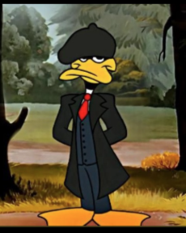

sou um garoto de 16 anos e gosto de programar
tambem gosto de assistir basquete, jogar pokemon, filosofia e sou
corinthiano.
eu me apaixonei pelo esporte quando era pequeno e desde então tendo
acompanhar todos os jogos do meu time favorito, cleveland cavaliers,
tiveram varios jodores que me marcaram como lebron james, kyrie irving,
kobe briant e outros,
na pagina explico melhor sobre.
filosofia
sempre bastante de filosofia, mas de uns tempos pra ca eu quis me
aprofundar mais nessa ciencia,
estudei sobre os filosofos antigos como socrates, platão e
aristoteles,
depois os mais modernos como descartes, kant, kafka e jhon locke,
na pagina eu explico melhor sobre o que eu aprendi e o que mais me
chamou atenção.
pokemon
a franquia de pokemon teve um grande impacto na minha infancia e na
minha adolescencia
eu me apaixonei pelo jogo, anime, filmes e tudo relacionado a pokemon,
teve ate uma festa com esse tema,
na pagina eu explico melhor sobre o que mais me marcou nessa franquia e
o que mais gosto nela.
Contato:po7987029@gmail.com